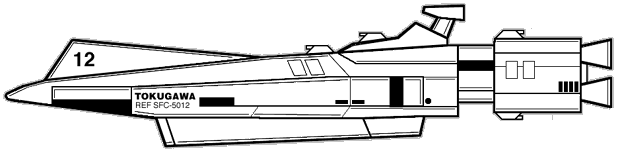
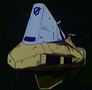
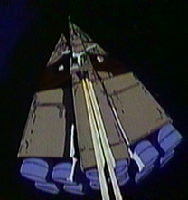
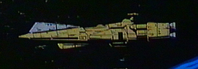
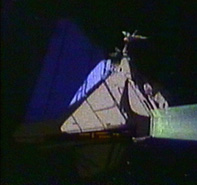

The following material is from
THE THIRD INVID
WAR, a fan supplement by
Dave Deitrich and
Chris
Meadows. Please feel free to use, copy, and distribute
it as you see fit. All we ask is that you give proper credit to us and do not
claim that it is your own work. Comments and suggestions are welcome.
REF TOKUGAWA-CLASS CRUISER

BACKGROUND
The Tokugawa-class Cruiser is the oldest terran capital ship
design still in service. Initially designed in 2015 following the end of the
First Robotech War, the cruisers were intended to augment the RDF's minuscule
fleet of captured Zentraedi warships and provide greater protection for the
Sol system. A total of 8 Tokugawa cruisers had been constructed at the RDF
Robotech Factory Satellite by the time of the SDF-3 Pioneer's departure
in 2022. 5 cruisers and a number of Zentraedi vessels were assigned to the
Pioneer mission, while the other 3 were left behind in service to the Tactical
Armored Space Corps of the Southern Cross. Due to their high cost of
operation only two additional Tokugawa cruisers were constructed following the
Pioneer mission's departure. Unfortunately all 5 Tokugawa cruisers that
stayed behind were destroyed by the Robotech Masters in the Second Robotech
War (2031-2032).
Meanwhile at Tirol the Tokugawa cruisers suffered from the same weaknesses
that the SDF-3 Pioneer did. Anticipating combat with a large number of
Zentraedi warships, the cruisers were woefully unprepared for the sheer number
of Invid mecha they faced during the battle of Tirol. Two of the five ships
were destroyed during the first battle of the Sentinels War (First Invid War),
and a third was destroyed during an Invid counterattack on Tirol in 2023. The
remaining two ships, the Tokugawa and the Hannibal, underwent an
extensive refit at the Fantoma Orbiting Shipyards, and additional Tokugawa
cruisers began construction in 2024.
Initially the Tokugawa-class cruisers were armed with 4 dual-barrel heavy
laser turrets (2 forward, 2 rear), 12 concealed Zentraedi-style laser cannons
in the front bow, and 4 heavy missile launcher tubes (2 forward, 2 rear).
Following their conversions in 2024 the REF Tokugawas were upgraded to 6 heavy
laser turrets (4 forward, 2 rear), 16 concealed forward laser cannons, and 8
heavy missile launcher tubes (6 forward, 2 rear). In addition badly-needed
anti-mecha weaponry was added in the form of 30 retractable laser cannons and
6 retractable missile turrets. Finally hyperspace communications and a fold
drive system were added, making the vessel capable of travelling beyond a
planetary system and commanding an interstellar fleet.

The Tokugawa cruisers served well during the First Invid War as command ships
for REF fleets. In 2032 the cruiser Hannibal under the command of
Major John Carpenter was dispatched to Earth to warn the United Earth
Government about the Robotech Masters. Unfortunately by this time the Masters
were already at war with the Armies of the Southern Cross. Alone and without
support, the Hannibal engaged two Robotech Master motherships in Earth
orbit and managed to destroy one by colliding with it after being mortally
wounded in battle. Meanwhile back near Tirol the cruisers Tokugawa,
Rutland and Jutland joined the haydonite cruiser Ark
Angel and several other Sentinels vessels in the final assault on the
Invid Regent at Optera. Unfortuantely that same year General T.R. Edwards
attempted a coup against the REF command and siezed control of the Tokugawa
cruisers Saratoga and Ticonderoga. The Ticonderoga was
eventually recaptured by loyal REF troops, but the Saratoga was
destroyed along with the Tokugawa when the two ships collided above
Optera. More tragedy struck when the cruisers Farragut and
Challenger, both assigned to Jonathan Wolff's REF Venus Attack
Group, failed to emerge from hyperspace when the fleet folded to the Sol
system. These two ships are still listed as missing in the REF fleet roster.
During the Third Invid War several Tokugawa cruisers were assigned to the
REF Icarus Recon Mission. Unfortunately all of these cruisers were
destroyed by the Invid Space Hive network
during recon missions and while attempting to get badly needed supplies to
resistance fighters on Earth.
Production rates for the Tokugawa cruisers fell as newer command cruisers such
as the Ikazuchi and Icarus classes were introduced. Production
of Tokugawa cruisers finally ceased in 2054 with the commissioning of the
RSS Endeavor. Although some Tokugawa cruisers have been scrapped, many
are still in service with the RGF fleet. One of the most famous (or infamous)
of these is the RSS Griffon, a Tokugawa cruiser which has been
permanently assigned to Robotech Guardian Forces Intelligence (RGFI). The
Griffon is painted all black and is rumored to have sensor and weapons
capabilities greater than any other ship in the RGF fleet. Her exact
specifications and missions are closely-guarded RGFI secrets, but most RGF
personnel regard her presence as an extremely bad omen.
Tokugawa cruisers were first produced at the RDF Factory Satellite in orbit
above Earth. After 2024 they were produced at the Fantoma Orbiting Shipyards
near Tirol, and later at the Karbarran Space Works and the REF Factory
Satellite. At their height Tokugawas were manufactured at a rate of 4 per
year.
RPG STATS
Government: Tactical Armored Space Corps (Southern Cross), Robotech
Expeditionary Force, later Sentinels Alliance
Ship Type: Super Dimensional (Space Fold) Cruiser
Class: Tokugawa SFC-5000
Manufacturer: Earth (RDF Factory Satellite), Tirol (Fantoma Orbiting
Shipyard, REF Factory Satellite), Karbarra (Karbarran Space Works).
- Crew: 2,155 total
- Officers: 85
- Main Crew: 840
- Flight Crew: 500
- Mecha Pilots: 380
- Troops: 350
- Notable Ships of Class:
-
| SFC-5012 Tokugawa |
launched 2015, assigned to REF Pioneer Mission in 2022, severly damaged in
1st Battle for Tirol same year, refit 2023, participated in final assault on
Optera in 2032, destroyed in collision with cruiser Saratoga during
T.R. Edwards' coup attempt same year |
| SFC-5015 Hannibal |
launched 2016, assigned to REF Pioneer Mission in 2022, severly damaged in
1st Battle for Tirol same year, refit 2023, dispatched to Earth with warning
about Robotech Masters in 2032, destroyed shortly after arrival by collision
with Robtech Masters mothership |
| SFC-5024 Jutland |
launched 2024, participated in final assault on Optera in 2032, assigned
to REF Icarus Recon Mission in 2043, destroyed above Earth by Invid Space Hives in 2044 |
| SFC-5025 Rutland |
launched 2024, participated in final assault on Optera in 2032, assigned
to REF Prometheus Attack Group in 2045, assigned to Robotech Guardian Forces
in 2048, retired from service in 2055, moored at RGF Naval Museum orbiting
Tirol in 2060 |
| SFC-5028 Saratoga |
launched 2025, captured by forces loyal to T.R. Edwards in 2032, destroyed
in collision with Tokugawa above Optera same year |
| SFC-5030 Ticonderoga |
launched 2025, captured by forces loyal to T.R. Edwards in 2032,
recaptured by REF forces same year, assigned to REF Icarus Recon Mission in
2043, destroyed above Earth by Invid Space
Hives in 2044 |
| SFC-5034 Farragut |
launched 2027, assigned to REF Venus Attack Group in 2033, failed to
materialize from hyperspace following fold to Sol system same year, listed as
missing 2034 |
| SFC-5037 Challenger |
launched 2028, assigned to REF Venus Attack Group in 2033, failed to
materialize from hyperspace following fold to Sol system same year, listed as
missing 2034 |
| SFC-5048 Griffon |
launched 2032, assigned to REF Prometheus Attack Group in 2045, assigned
to Robotech Guardian Forces in 2048, assigned special service to Robotech
Guardian Forces Intelligence in 2070, still in service circa 2080 |
MDC BY LOCATION:
(1) Main Body 15,000
(2) Command Tower 2,000
Bow (forward 1/4 of ship) 10,000
(3) Engineering (rear 1/4 of ship) 8,000
(4) Flight Deck (bottom) 5,000
(5) Main Engines (8) 1,000 each
(5) Auxiliary Engines (4) 750 each
Guidance Thrusters (50) 200 each
Laser Turrets (6) 150 each
Forward Laser Cannons (16) 100 each
Heavy Missile Launcher Tubes (8) 150 each
Retractable Laser Turrets (30) 100 each
Retractable Missile Launchers (6) 100 each
(6) Pin Point Barriers (4) 5,000 each
Small Airlocks/Access Hatches (40) 250 each
Main Airlocks (8) 500 each
Outer Hull (per 40ft area) 200
Interior walls (per 20ft area) 20
Main Hangar Door (1) 800
Secondary Hangar Doors (4) 500 each
NOTES:
- Depleting the MDC of the main body will eliminate the cruiser. All
internal systems will shut down, including life support and internal
gravity. In addition, there is a 30% chance that the power systems will
overload and the destroyer will explode, doing 4D6x1,000 M.D. to
everything in a 5,000 ft (1,525 m) radius. Regardless of whether it
explodes or not, the ship itself will be an unsalvageable floating
wreck.
- Destroying the command tower will instantly kill anyone on the bridge,
as well as knock out radar and primary communications. There are two
auxiliary bridges in the main body of the ship that the surviving crew
can take command from. However if the command tower is lost then the
ship will be at -5 initiative and -3 to dodge due to loss of sensors.
- Depleting the MDC of the engineering section will essentially destroy
the cruiser. All power systems, the main engines and the auxiliary
engines will be eliminated (see below). In addition, all internal
systems will shut down due to lack of power, including life support
and internal gravity. Finally, there is a 50% chance that the reflex
furnace will overload and explode, doing 4D6x1,000 M.D. to
everything in a 5,000 ft (1,525 m) radius.
- Destroying the flight decks will greatly impair the cruiser's ability to
deploy and recover mecha. Under normal circumstances the destroyer can
launch or recover 10 mecha per turn. For every 500 points of damage the
flight deck takes reduce this number by 1. If the flight deck reaches 0
MDC then it is destroyed; no mecha can be launched or recovered,
40+(1D6x10)% of the flight crew will be killed, and any mecha that have
already been launched will need to find another place to land.
- Depleting the MDC of the main engines will force the ship to rely on its
auxiliary engines. Depleting the MDC of the main engines AND auxiliary
engines will leave the ship adrift in space. If in an atmosphere, the
ship will crash (destruction of the main engines will render the
antigravity system useless due to loss of power).
- The Pinpoint Barriers regenerate at a rate of 1,250 MD per second (2,500
MD per melee round). If destroyed, a barrier will completely regenerate
within four seconds (2 melee rounds). See the Pinpoint
Barrier System entry for details.
SPEEDS:
- Speed (sublight): 0.16 speed of light (25,600 miles/41,200 km per
second)
Speed (Auxiliary Drives): Mach 10
Space Fold: Not equipped with space fold drives prior to 2023.
After 2023 range unlimited (1 light year every 6 minutes).
Planet bound:
- Has vertical take off and landing (VTOL) capability. Can reach speeds of
up to Mach 6 in an upper planetary atmosphere, but not designed for extended
flight or maneuvering. Cannot travel underwater (but will float on an ocean
surface).
- Maximum Range: Unlimited (powered by a protoculture reactor with an
estimated life span of 30 years)
STATISTICAL DATA:
Length: 2475 ft (754 m)
Width: 950 ft (290 m)
Height: 790 ft (241 m)
Weight: 16,000,000 tons (standard)
- Fold System:
- Initially none
- After 2023 equipped with Robotech Research Group (RRG) Mk. 2R fold system
cluster
- Sublight Drive:
- Initially Workl-Quatafilla macro nozzle cluster (RRG-modified)
- After 2023 equipped with REF Naval Engineering Class XI macro nozzle
cluster
- Gravity Control System:
- Geteulmaqulla-Zollia internal gravity control system (RRG-modified)
- Auxiliary Engine:
- Initially Macross Engineering Mk. 48 nuclear thrust system
- After 2023 equipped with REF Naval Engineering Class XV mass-conservation
thrust system
- Radar System:
- Initially RRG Type VI Standard Sensor Cluster
- After 2023 equipped with RRG Type XIV Hyperspace Sensor Cluster
WEAPON SYSTEMS:

- DUAL-BARREL HEAVY LASER TURRETS (4 initially, 6 after 2023): The
main weapons of the Tokugawa cruisers are zentraedi-style turreted
heavy laser cannons. Originally the cruisers mounted four turrets (two
near the center above the main body, two on the rear engineering section)
but following the 2023 refit two additional turrets were added (one on
either side of the command tower). Each turret can rotate 360 degrees
and has a 180 degree arc of fire.
- PRIMARY PURPOSE: Anti-Warship
- SECONDARY PURPOSE: Heavy Assault
- RANGE: 100,000 miles (160,000 km) in an atmosphere,
200,000 miles (320,000 km) in space
- DAMAGE: 1D6x100 M.D. per shot, 2D6x100 M.D. per dual blast
- RATE OF FIRE: Each laser can fire twice per melee round
- PAYLOAD: Unlimited
- CONCEALED ZENTRAEDI-STYLE LASER CANNONS (12 initially, 16 after
2023): As a backup to the main laser cannons and useful for heavy
assaults, the Tokugawa cruisers are equipped with concealed lasers on
the bow of the ship, similar to those used on Zentraedi cruisers. These
lasers have a limited range of motion; they can be adjusted 30 degrees
to the left, right, above or below the centerline of the ship. Initially
12 lasers were mounted on the bow of the Tokugawa, but after the 2023
refit this number was raised to 16.
- PRIMARY PURPOSE: Anti-Warship
- SECONDARY PURPOSE: Heavy Assault
- RANGE: 300 miles (483 km) in an atmosphere,
600 miles (966 km) in space
- DAMAGE: 2D6x20 M.D. per blast
- RATE OF FIRE: Each laser can fire once per round, and can
be combined with other lasers to form a single volley (counts as
one attack).
- PAYLOAD: Unlimited
- HEAVY MISSILE LAUNCHERS (4 initially, 8 after 2023): To further
augment their anti-warship firepower, the Tokugawa cruisers are equipped
with torpedo-like missile tubes. Initially the cruisers had two tubes
pointing forward and two pointing rearward, but after the 2023 refit
an additional 4 forward-pointing tubes were added. The launchers contain
long-range nuclear missiles and are intended for use in heavy combat only.
- PRIMARY PURPOSE: Heavy Assault
- SECONDARY PURPOSE: Anti-Warship
- RANGE: 2,000 miles (3,216 km)
- SPEED: Mach 2+ (1,340 mph/2,140 kmph) in an atmosphere.
- DAMAGE: 6D6x100 M.D.
- BLAST RADIUS: 2,000 feet (610 m)
- RATE OF FIRE: Each launcher tube holds one missile and must be
reloaded after firing. Reloading a launcher tube takes 30 seconds (2
melee rounds). If loaded, all 8 tubes can fire at once for a volley
of 6 nuclear missiles (!).
- PAYLOAD: A typical cruiser carries 48 missiles in
storage that can be readied for firing in about 30 minutes.
Additional missiles can be carried if deemed necessary, however.
- NOTE: These missiles CANNOT be used by variable fighters. Each
missile is approximately 12 ft (3.6 m) long, about twice the size of
a VR-152 Battler II cyclone.
- RETRACTABLE LASER TURRETS (30, not added until after 2023): During
the 2023 refit retractable laser turrets were added to the Tokugawa
cruisers to provide better protection from Invid mecha attacks. These
lasers were placed at strategic positions along the hull and were
primarily intended for anti-mecha defense, but can do moderate damage
against enemy spacecraft that get too close. When not in use gun turrets
are concealed within the hull underneath a sliding hatch. At most 15
lasers can be brought to bear on a single target.
- PRIMARY PURPOSE: Defense
- SECONDARY PURPOSE: Anti-Mecha
- RANGE: 30 miles (48.3 km) in an atmosphere,
60 miles (96.6 km) in space
- DAMAGE: 1D6x20 M.D. each. Several lasers can be directed to
fire in volleys of 3 or more. A volley of 3 beams does 3D6x20 M.D., a
volley of 6 beams does 6D6x20 M.D., and so on. A full volley of 10
beams aimed at a single target does 1D6x200 M.D. (!) if it hits.
- RATE OF FIRE: Each laser can fire once per melee, and can be
combined in any volley combination of 3 or more lasers, up to 10
lasers. Volleys can be directed at different targets.
- PAYLOAD: Unlimited.
- NOTE: The lasers can be set on automatic during combat, during
which time they have a +2 to strike due to their advanced tracking
systems. The lasers tracking systems will target incoming missiles
first and attacking mecha/aircraft second.
- RETRACTABLE MEDIUM MISSILE LAUNCHERS (6, not added until after
2023): Along with the retractable laser turrets medium-range missile
turrets were added to the Tokugawa cruisers in 2023 to further augment
their anti-mecha defenses. Each launcher contains 8 missile tubes
allowing volleys of up to 8 missiles to be fired at a single target per
launcher. Once depleted, the missile launchers are reloaded by an
automated loading system that takes 15 seconds (one melee round) to reload
all 8 missiles. Armor-piercing smart missiles are usually used to avoid
chances of friendly fighters being shot down by the missiles.
- PRIMARY PURPOSE: Anti-Aircraft
- SECONDARY PURPOSE: Anti-Warship
- MISSILE TYPES: Any type of REF Medium Range Missile can be
used. Smart missiles are commonly used to avoid hitting friendly
aircraft.
- RANGE: Varies, typically 60 miles (80.4 km).
- SPEED: Varies, typically 1600mph (2571kmph) in an atmosphere.
- DAMAGE: Varies, typically 2D4x10 M.D.
- BLAST RADIUS: Varies, typically 15 feet.
- RATE OF FIRE: Volleys of 2, 4, 6, or 8 missiles per
launcher.
- PAYLOAD: Each launcher holds 8 missiles. Once the missiles
are expended the launcher is reloaded within 1 round via an automated
system. The reload system holds 48 missiles per launcher.
- DS-1 PINPOINT BARRIER DEFENSE SYSTEM: Originally
developed by Dr. Emil Lang onboard the SDF-1 during the First Robotech
War, the Pinpoint Barrier System is a standard defense system on board
most REF starships, including the Tokugawa cruisers. The system
generates four small disc-shaped force fields that can be positioned
anywhere along the ship to deflect missiles, energy beams or projectiles.
Each pinpoint barrier is about 200 ft (61 m) in length and can absorb up
to 5,000 MD in damage, which then regenerates within five seconds (3 melee
attacks). The barriers can also be layered on top of each other to
generate a field which provides 20,000 MDC and can even deflect heavy
particle beams (usually).
The four barriers are controlled by operators in the command tower of the
carrier. These operators are instructed to defend (1) the command
tower, (2) main engines, (3) flight deck, and (4) weapons systems
in that order. The operators primarily concentrate on defending
the ship against larger spacecraft and leave defense against mecha
attacking the destroyer to the Veritechs and retractible weapon systems.
- PRIMARY PURPOSE: Defense (the pinpoint barrier system cannot be
used as a weapon)
- RANGE: Up to 100 feet (30.5 m) from the surface of the vessel.
- DAMAGE CAPACITY: Can sustain up to 5,000 MD per round.
Regenerates at a rate of 2,500 MD per melee round.
- RADIUS: 200 ft (61 m)
- DEFENSIVE MOVEMENT: Can move from one end of the destroyer to
the other in less than a single round. Trained operators can attempt
to block attacks up to 8 times per melee (counts as a parry) and are
at +7 to block. Untrained characters can parry up to their number of
hand-to-hand attacks with their normal parry bonuses only.
- PAYLOAD: Nearly inexhaustible. Will work as long as system is
functional (see below) and engines are intact. If main engines are
destroyed, the barrier will loose power and not function.
- NOTE: If all four barriers are grouped in a single spot they
can deflect a heavy particle beam attack, such as the one generated
by Zentraedi or Robotech Master warships. However, the beam will
completely destroy all four barriers and put incredible strain on the
pinpoint barrier system to the point where it may short out. After
deflecting an energy beam, roll percentile dice on the table below to
determine additional effects/damage.
- 01-15: Lucked out, system will be operational in 1D6 hours.
- 16-30: Minor damage, system will require 4D6 hours to
repair.
- 31-45: Major damage, system will require 2D6x10 hours to
repair (yes, DAYS of work).
- 46-60: Completely destroyed! System can be rebuilt, but
will require new parts and 2D6 DAYS of work to
replace.
- 61-75: Major damage, system will require 2D6x10 hours to
repair.
- 76-90: Minor damage, system will require 4D6 hours to
repair.
- 91-95: Lucked out, system will be operational in 1D6 hours.
- 96-00: It's a miracle! Trivial damage only, system will
be operational again in only 4D6 melee rounds!

SYSTEMS OF NOTE:
- ANTIGRAVITY PROPULSION SYSTEM: The Tokugawa cruisers are
equipped with an anti-gravity propulsion system used for planetary landings
and liftoffs. The system is good for vertical ascent/descent only and can
lift the ship at speeds of up to 1,320 feet (400 m) per minute. The system
will function so long as the main engines can supply energy to it.
- HYPERSPACE COMMUNICATIONS: The cruiser is equipped with a
hyperspace communications relay which allows faster-than-light communication
between the ships and other vessels or planetary bases. Hyperspace
communications are still not instantaneous, however. Audio/video
communication travels through hyperspace at a rate of about 5 seconds per
light year, so messages communicated over vast distances can still take days,
weeks, or months to arrive.
- LIFE SUPPORT SYSTEMS: The Tokugawa cruisers have sufficient life
support to provide breathable air and comfortable temperatures for 2,500
people for up to 15 years (air is recycled). In an emergency the life support
system can support up to 5,000 people at one time, though living conditions
onboard will get extremely cramped at that point. The cruiser also holds
sufficient food and water to support 2,500 people for up to 6 months.
- LONG-RANGE LASER/SATELLITE RELAY COMMUNICATIONS: The impressive
communications array of the cruiser can communicate with up to 500
craft simultaneously at ranges of up to 900 miles (1,440 km). This range can
be boosted indefinitely by using satellites or other spacecraft to relay
communications.
- LONG-RANGE RADAR: The radar array of the Tokugawa cruisers can
track and identify up to 500 craft simultaneously. The radar system has a
2,000 mile/3,200 km range.
- SPACE FOLD SYSTEM: Following 2023 the Tokugawa cruiser was
equipped with a Robotech Research Group fold drive, capable of
propelling the ship through hyperspace at speeds up to 3.28x10^10 mps
(5.25x10^10 kmps), or 1 light year per 6 minutes. When executing a space fold
the cruiser will transport any ships within a 2 mile (3.2 km) radius with it,
allowing it to transport up to about 100 smaller ships with it, if necessary.
The range of the fold drive is theoretically unlimited except by the life
expectancy of the spacecraft.
- SUBLIGHT ENGINES: As a backup to the Fold System, the cruiser
is equipped with sublight engines that can propel the ship at speeds up to
0.16 speed of light (25,600 miles/41,200 km per second) in space. Note that
these engines are mainly intended for rapid movement inside a planetary system
and are not suited for long voyages between star systems. In a planetary
atmosphere the carrier is limited to speeds of Mach 6 at low altitudes or Mach
10 at high altitudes due to hull stress.
- SUBSPACE MASS SENSORS: The Tokugawa cruisers are equipped
with subspace sensors which are based on the same principles as the
hyperspace communications array. These sensors can essentially instantly
detect mass readings and movement of objects up to 1 AU (93 million miles)
distant from the carrier, and the readings are used both for early warning and
for navigation when travelling at sublight speeds. Readings taken with the
subspace sensors are not very detailed (-25% penalty when trying to identify a
detected object) and cannot detect objects of less than 60,000 kg (this
includes most variable fighters).
MECHA COMPLEMENT:

The landing bay can hold and support a grand total of 350 veritechs/destroids
of any type, as long as the mecha are smaller than 50 ft (15.2 m) and weigh
less than 40 tons each. In addition, there are 3 special berths for larger
mecha up to 100 ft (30.4 m) tall and 300 tons in weight (i.e. Mac II or III).
Below are some typical mecha complements, though changes may be made if
required by the mission.
Southern Cross Tokugawa cruiser (circa 2028)
- 92 Corsair III non-transformable fighters (Southern Cross pg. 80)
- 48 Logan Veritechs (Southern Cross pg. 57)
- 60 AJACS Veritech Attack Copters (Southern Cross pg. 59)
- 24 VAF-6 Alpha Veritechs (Sentinels pg. 83)
- 48 VF-11 Thunderbolt Veritechs
- 12 Veritech Hover Tanks (Southern Cross pg. 62)
- 48 Cosmic Unit Space Battloids (Southern Cross pg. 67)
- 6 GMP Multi-Purpose Battloids (Southern Cross pg. 64)
- 12 GMP Security Robots (Southern Cross pg. 76)
- 2 TASC Assault Shuttles (Southern Cross pg. 83)
REF Tokugawa cruiser (circa 2030)
- 144 VAF-6 Alpha Fighters (Sentinels pg. 82)
- 72 VBF-1 Beta Fighters (Sentinels pg. 87)
- 20 VF-1 Veritechs (Robotech RPG pg. 47)
- 6 VF-1V
Vindicators
- 500 Cyclones (assorted types, Sentinels pg. 75)
- 12 Veritech Hover Tanks (Sentinels pg. 93)
- 24 Mk VII Excalibers (Sentinels pg. 61)
- 24 Mk III Gladiators (Sentinels pg. 63)
- 6 Mk XI Raidar X (Sentinels pg. 66)
- 6 Mk XIII Spartans (Sentinels pg. 68)
- 3 M.A.C. IIIs (Sentinels pg. 65)
- 33 TBP-Z1 Tactical Battle Pods (Sentinels pg. 70)
- 3 OBP-Z2 Officer's Battle Pods (Sentinels pg. 72)
- 12 AAT-40 Assault Transports (Sentinels pg. 107)
- 12 AAT-30 Assault Transports (Sentinels pg. 107)
- 4 ARRAV Rocket Launchers (Sentinels pg. 108)
- 1 MTA Titan (Sentinels pg. 114)
- 1 Horizont Transatmospheric Shuttle (modified to carry MTA Titan,
Sentinels pg. 94)
REF Tokugawa cruiser (circa 2043)
- 48 VAF-6 Alpha Fighters (Sentinels pg. 82)
- 80 VAF-8 Alpha Fighters (32 have SF-10 Cloaking
Devices)
- 6 VAF-8R Recon Alpha Fighters
- 6 VAF-9 Alpha Fighters
- 24 VBF-1 Beta Fighters (Sentinels pg. 87)
- 54 VBF-2 Beta Fighters (22 have SF-10 Cloaking
Devices)
- 6 VBF-2R Beta Fighters
- 6 VBF-3 Beta Fighters
- 6 VF-1V
Vindicators
- 500 Cyclones (assorted types, mostly Second
Generation Cyclones)
- 24 Veritech Hover Tanks (Sentinels pg. 93)
- 18 Mk VII Excalibers (Sentinels pg. 61)
- 18 Mk III Gladiators (Sentinels pg. 63)
- 12 Mk XI Raidar X (Sentinels pg. 66)
- 6 Mk XIII Spartans (Sentinels pg. 68)
- 3 M.A.C. IIIs (Sentinels pg. 65)
- 33 TBP-Z1 Tactical Battle Pods (Sentinels pg. 70)
- 3 OBP-Z2 Officer's Battle Pods (Sentinels pg. 72)
- 12 AAT-40 Assault Transports (Sentinels pg. 107)
- 12 AAT-30 Assault Transports (Sentinels pg. 107)
- 4 ARRAV Rocket Launchers (Sentinels pg. 108)
- 1 MTA Titan (Sentinels pg. 114)
- 1 Horizont Transatmospheric Shuttle (modified to carry MTA Titan,
Sentinels pg. 94)
In all three examples a Tokugawa cruiser will also have 16 TCH-4
Tractor-Haulers, 30 ML-3 Forklifts, 6 AMR-10 Mecha Retrieval Transport
Vehicles, 8 REF Personnel Shuttles and 4 REF Cargo Shuttles onboard.